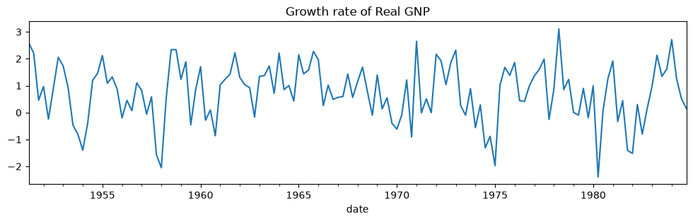
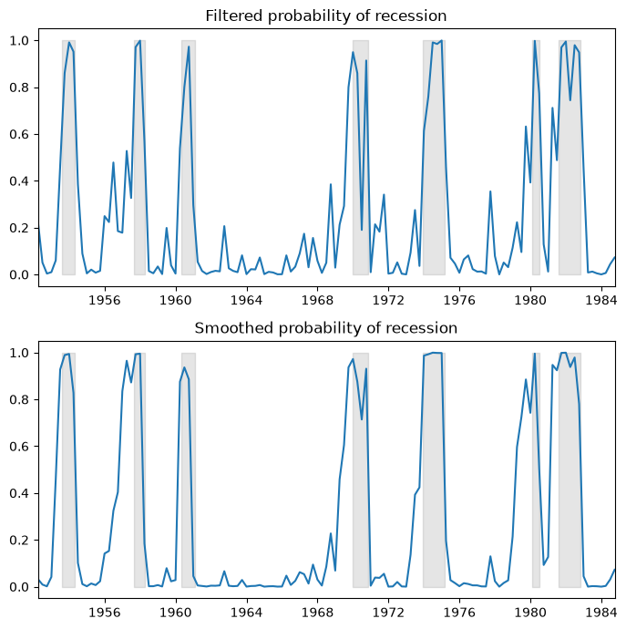
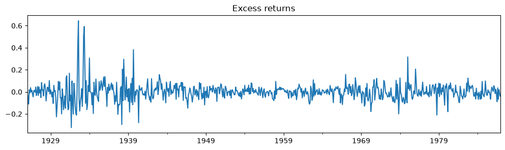
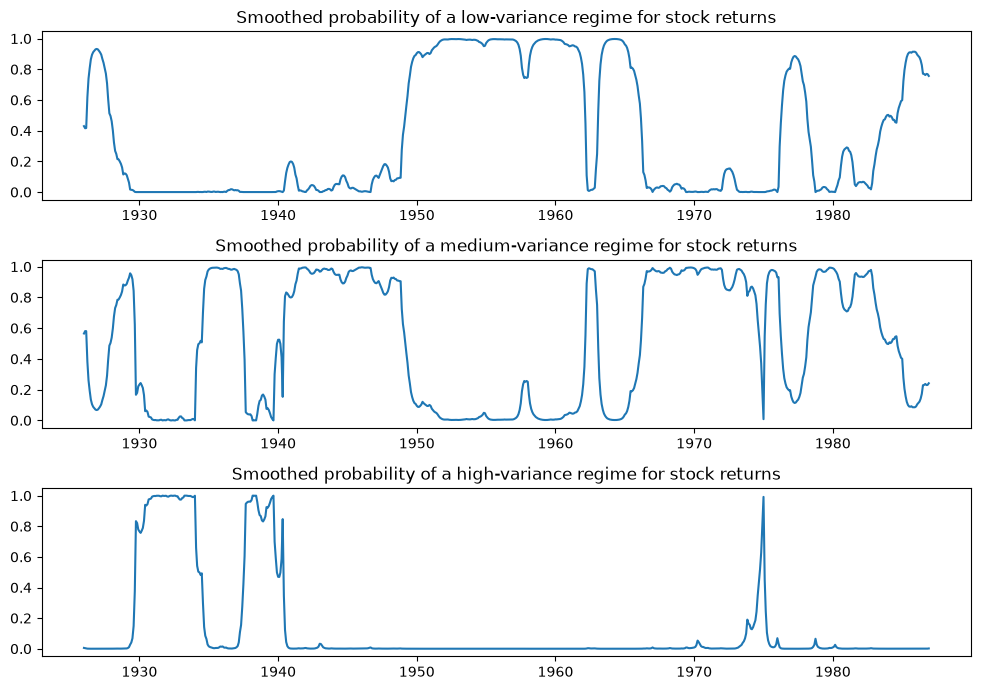
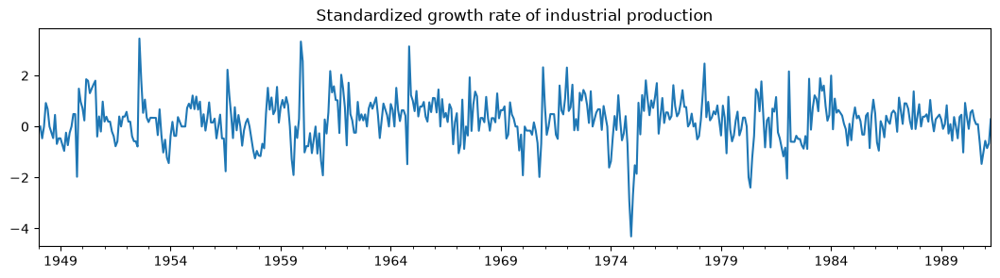
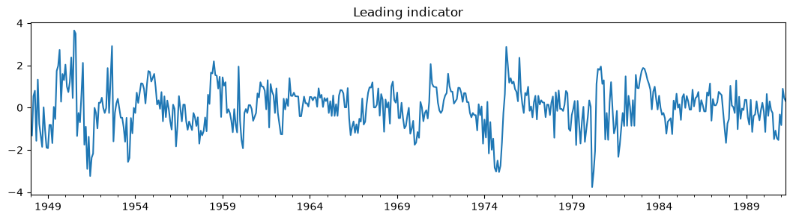
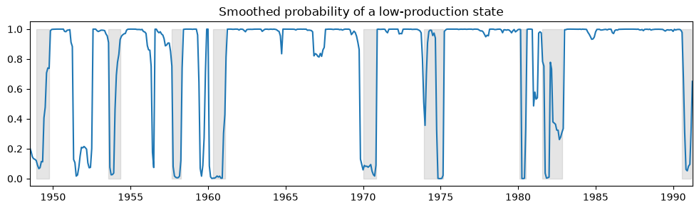
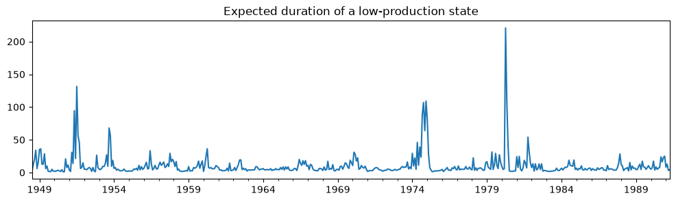

Markov switching autoregression models#
This notebook provides an example of the use of Markov switching models in statsmodels to replicate a number of results presented in Kim and Nelson (1999). It applies the Hamilton (1989) filter the Kim (1994) smoother.
This is tested against the Markov-switching models from E-views 8, which can be found at http://www.eviews.com/EViews8/ev8ecswitch_n.html#MarkovAR or the Markov-switching models of Stata 14 which can be found at http://www.stata.com/manuals14/tsmswitch.pdf.
[1]:
%matplotlib inline
from datetime import datetime
from io import BytesIO
import matplotlib.pyplot as plt
import numpy as np
import pandas as pd
import requests
import statsmodels.api as sm
# NBER recessions
from pandas_datareader.data import DataReader
usrec = DataReader(
"USREC", "fred", start=datetime(1947, 1, 1), end=datetime(2013, 4, 1)
)
Hamilton (1989) switching model of GNP#
This replicates Hamilton’s (1989) seminal paper introducing Markov-switching models. The model is an autoregressive model of order 4 in which the mean of the process switches between two regimes. It can be written:
Each period, the regime transitions according to the following matrix of transition probabilities:
where \(p_{ij}\) is the probability of transitioning from regime \(i\), to regime \(j\).
The model class is MarkovAutoregression in the time-series part of statsmodels. In order to create the model, we must specify the number of regimes with k_regimes=2, and the order of the autoregression with order=4. The default model also includes switching autoregressive coefficients, so here we also need to specify switching_ar=False to avoid that.
After creation, the model is fit via maximum likelihood estimation. Under the hood, good starting parameters are found using a number of steps of the expectation maximization (EM) algorithm, and a quasi-Newton (BFGS) algorithm is applied to quickly find the maximum.
[2]:
import requests
import shutil
def download_file(url):
local_filename = url.split("/")[-1]
with requests.get(url, stream=True) as r:
with open(local_filename, "wb") as f:
shutil.copyfileobj(r.raw, f)
return local_filename
filename = download_file("https://www.stata-press.com/data/r14/rgnp.dta")
# Get the RGNP data to replicate Hamilton
dta = pd.read_stata(filename).iloc[1:]
dta.index = pd.DatetimeIndex(dta.date, freq="QS")
dta_hamilton = dta.rgnp
# Plot the data
dta_hamilton.plot(title="Growth rate of Real GNP", figsize=(12, 3))
# Fit the model
mod_hamilton = sm.tsa.MarkovAutoregression(
dta_hamilton, k_regimes=2, order=4, switching_ar=False
)
res_hamilton = mod_hamilton.fit()

[3]:
res_hamilton.summary()
[3]:
| Dep. Variable: | rgnp | No. Observations: | 131 |
|---|---|---|---|
| Model: | MarkovAutoregression | Log Likelihood | -181.263 |
| Date: | Wed, 01 Jul 2026 | AIC | 380.527 |
| Time: | 12:21:29 | BIC | 406.404 |
| Sample: | 04-01-1951 | HQIC | 391.042 |
| - 10-01-1984 | |||
| Covariance Type: | approx |
| coef | std err | z | P>|z| | [0.025 | 0.975] | |
|---|---|---|---|---|---|---|
| const | -0.3588 | 0.265 | -1.356 | 0.175 | -0.877 | 0.160 |
| coef | std err | z | P>|z| | [0.025 | 0.975] | |
|---|---|---|---|---|---|---|
| const | 1.1635 | 0.075 | 15.614 | 0.000 | 1.017 | 1.310 |
| coef | std err | z | P>|z| | [0.025 | 0.975] | |
|---|---|---|---|---|---|---|
| sigma2 | 0.5914 | 0.103 | 5.761 | 0.000 | 0.390 | 0.793 |
| ar.L1 | 0.0135 | 0.120 | 0.112 | 0.911 | -0.222 | 0.249 |
| ar.L2 | -0.0575 | 0.138 | -0.418 | 0.676 | -0.327 | 0.212 |
| ar.L3 | -0.2470 | 0.107 | -2.310 | 0.021 | -0.457 | -0.037 |
| ar.L4 | -0.2129 | 0.111 | -1.926 | 0.054 | -0.430 | 0.004 |
| coef | std err | z | P>|z| | [0.025 | 0.975] | |
|---|---|---|---|---|---|---|
| p[0->0] | 0.7547 | 0.097 | 7.819 | 0.000 | 0.565 | 0.944 |
| p[1->0] | 0.0959 | 0.038 | 2.542 | 0.011 | 0.022 | 0.170 |
Warnings:
[1] Covariance matrix calculated using numerical (complex-step) differentiation.
We plot the filtered and smoothed probabilities of a recession. Filtered refers to an estimate of the probability at time \(t\) based on data up to and including time \(t\) (but excluding time \(t+1, ..., T\)). Smoothed refers to an estimate of the probability at time \(t\) using all the data in the sample.
For reference, the shaded periods represent the NBER recessions.
[4]:
fig, axes = plt.subplots(2, figsize=(7, 7))
ax = axes[0]
ax.plot(res_hamilton.filtered_marginal_probabilities[0])
ax.fill_between(usrec.index, 0, 1, where=usrec["USREC"].values, color="k", alpha=0.1)
ax.set_xlim(dta_hamilton.index[4], dta_hamilton.index[-1])
ax.set(title="Filtered probability of recession")
ax = axes[1]
ax.plot(res_hamilton.smoothed_marginal_probabilities[0])
ax.fill_between(usrec.index, 0, 1, where=usrec["USREC"].values, color="k", alpha=0.1)
ax.set_xlim(dta_hamilton.index[4], dta_hamilton.index[-1])
ax.set(title="Smoothed probability of recession")
fig.tight_layout()

From the estimated transition matrix we can calculate the expected duration of a recession versus an expansion.
[5]:
print(res_hamilton.expected_durations)
[ 4.07604746 10.42589383]
In this case, it is expected that a recession will last about one year (4 quarters) and an expansion about two and a half years.
Kim, Nelson, and Startz (1998) Three-state Variance Switching#
This model demonstrates estimation with regime heteroskedasticity (switching of variances) and no mean effect. The dataset can be reached at http://econ.korea.ac.kr/~cjkim/MARKOV/data/ew_excs.prn.
The model in question is:
Since there is no autoregressive component, this model can be fit using the MarkovRegression class. Since there is no mean effect, we specify trend='n'. There are hypothesized to be three regimes for the switching variances, so we specify k_regimes=3 and switching_variance=True (by default, the variance is assumed to be the same across regimes).
[6]:
# Get the dataset
data_loc = "https://raw.githubusercontent.com/statsmodels/smdatasets/refs/heads/main/data/markov-autoregression/ew_excs.prn"
raw = pd.read_csv(data_loc, header=None, engine="python")
raw.index = pd.date_range("1926-01-01", "1995-12-01", freq="MS")
dta_kns = raw.loc[:"1986"] - raw.loc[:"1986"].mean()
# Plot the dataset
dta_kns[0].plot(title="Excess returns", figsize=(12, 3))
# Fit the model
mod_kns = sm.tsa.MarkovRegression(
dta_kns, k_regimes=3, trend="n", switching_variance=True
)
res_kns = mod_kns.fit()

[7]:
res_kns.summary()
[7]:
| Dep. Variable: | 0 | No. Observations: | 732 |
|---|---|---|---|
| Model: | MarkovRegression | Log Likelihood | 1001.895 |
| Date: | Wed, 01 Jul 2026 | AIC | -1985.790 |
| Time: | 12:21:39 | BIC | -1944.428 |
| Sample: | 01-01-1926 | HQIC | -1969.834 |
| - 12-01-1986 | |||
| Covariance Type: | approx |
| coef | std err | z | P>|z| | [0.025 | 0.975] | |
|---|---|---|---|---|---|---|
| sigma2 | 0.0012 | 0.000 | 7.136 | 0.000 | 0.001 | 0.002 |
| coef | std err | z | P>|z| | [0.025 | 0.975] | |
|---|---|---|---|---|---|---|
| sigma2 | 0.0040 | 0.000 | 8.489 | 0.000 | 0.003 | 0.005 |
| coef | std err | z | P>|z| | [0.025 | 0.975] | |
|---|---|---|---|---|---|---|
| sigma2 | 0.0311 | 0.006 | 5.461 | 0.000 | 0.020 | 0.042 |
| coef | std err | z | P>|z| | [0.025 | 0.975] | |
|---|---|---|---|---|---|---|
| p[0->0] | 0.9747 | 0.000 | 7857.416 | 0.000 | 0.974 | 0.975 |
| p[1->0] | 0.0195 | 0.010 | 1.949 | 0.051 | -0.000 | 0.039 |
| p[2->0] | 2.354e-08 | nan | nan | nan | nan | nan |
| p[0->1] | 0.0253 | 3.97e-05 | 637.835 | 0.000 | 0.025 | 0.025 |
| p[1->1] | 0.9688 | 0.013 | 75.528 | 0.000 | 0.944 | 0.994 |
| p[2->1] | 0.0493 | 0.032 | 1.551 | 0.121 | -0.013 | 0.112 |
Warnings:
[1] Covariance matrix calculated using numerical (complex-step) differentiation.
Below we plot the probabilities of being in each of the regimes; only in a few periods is a high-variance regime probable.
[8]:
fig, axes = plt.subplots(3, figsize=(10, 7))
ax = axes[0]
ax.plot(res_kns.smoothed_marginal_probabilities[0])
ax.set(title="Smoothed probability of a low-variance regime for stock returns")
ax = axes[1]
ax.plot(res_kns.smoothed_marginal_probabilities[1])
ax.set(title="Smoothed probability of a medium-variance regime for stock returns")
ax = axes[2]
ax.plot(res_kns.smoothed_marginal_probabilities[2])
ax.set(title="Smoothed probability of a high-variance regime for stock returns")
fig.tight_layout()

Filardo (1994) Time-Varying Transition Probabilities#
This model demonstrates estimation with time-varying transition probabilities. The dataset can be reached at http://econ.korea.ac.kr/~cjkim/MARKOV/data/filardo.prn.
In the above models we have assumed that the transition probabilities are constant across time. Here we allow the probabilities to change with the state of the economy. Otherwise, the model is the same Markov autoregression of Hamilton (1989).
Each period, the regime now transitions according to the following matrix of time-varying transition probabilities:
where \(p_{ij,t}\) is the probability of transitioning from regime \(i\), to regime \(j\) in period \(t\), and is defined to be:
Instead of estimating the transition probabilities as part of maximum likelihood, the regression coefficients \(\beta_{ij}\) are estimated. These coefficients relate the transition probabilities to a vector of pre-determined or exogenous regressors \(x_{t-1}\).
[9]:
# Get the dataset
data_loc = "https://raw.githubusercontent.com/statsmodels/smdatasets/refs/heads/main/data/markov-autoregression/filardo.prn"
dta_filardo = pd.read_csv(data_loc, sep=r"\s+", engine="python")
dta_filardo.index = pd.date_range("1948-01-01", "1991-04-01", freq="MS")
dta_filardo["dlip"] = np.log(dta_filardo["ip"]).diff() * 100
# Deflated pre-1960 observations by ratio of std. devs.
# See hmt_tvp.opt or Filardo (1994) p. 302
std_ratio = (
dta_filardo["dlip"]["1960-01-01":].std() / dta_filardo["dlip"][:"1959-12-01"].std()
)
dta_filardo.loc[:"1959-12-01", "dlip"] = dta_filardo["dlip"][:"1959-12-01"] * std_ratio
dta_filardo["dlleading"] = np.log(dta_filardo["leading_index"]).diff() * 100
dta_filardo["dmdlleading"] = dta_filardo["dlleading"] - dta_filardo["dlleading"].mean()
# Plot the data
dta_filardo["dlip"].plot(
title="Standardized growth rate of industrial production", figsize=(13, 3)
)
plt.figure()
dta_filardo["dmdlleading"].plot(title="Leading indicator", figsize=(13, 3))
[9]:
<Axes: title={'center': 'Leading indicator'}>


The time-varying transition probabilities are specified by the exog_tvtp parameter.
Here we demonstrate another feature of model fitting - the use of a random search for MLE starting parameters. Because Markov switching models are often characterized by many local maxima of the likelihood function, performing an initial optimization step can be helpful to find the best parameters.
Below, we specify that 20 random perturbations from the starting parameter vector are examined and the best one used as the actual starting parameters. Because of the random nature of the search, we seed the random number generator beforehand to allow replication of the result.
[10]:
mod_filardo = sm.tsa.MarkovAutoregression(
dta_filardo.iloc[2:]["dlip"],
k_regimes=2,
order=4,
switching_ar=False,
exog_tvtp=sm.add_constant(dta_filardo.iloc[1:-1]["dmdlleading"]),
)
np.random.seed(12345)
res_filardo = mod_filardo.fit(search_reps=20)
[11]:
res_filardo.summary()
[11]:
| Dep. Variable: | dlip | No. Observations: | 514 |
|---|---|---|---|
| Model: | MarkovAutoregression | Log Likelihood | -586.572 |
| Date: | Wed, 01 Jul 2026 | AIC | 1195.144 |
| Time: | 12:21:58 | BIC | 1241.808 |
| Sample: | 03-01-1948 | HQIC | 1213.433 |
| - 04-01-1991 | |||
| Covariance Type: | approx |
| coef | std err | z | P>|z| | [0.025 | 0.975] | |
|---|---|---|---|---|---|---|
| const | -0.8659 | 0.153 | -5.658 | 0.000 | -1.166 | -0.566 |
| coef | std err | z | P>|z| | [0.025 | 0.975] | |
|---|---|---|---|---|---|---|
| const | 0.5173 | 0.077 | 6.706 | 0.000 | 0.366 | 0.668 |
| coef | std err | z | P>|z| | [0.025 | 0.975] | |
|---|---|---|---|---|---|---|
| sigma2 | 0.4844 | 0.037 | 13.172 | 0.000 | 0.412 | 0.556 |
| ar.L1 | 0.1895 | 0.050 | 3.761 | 0.000 | 0.091 | 0.288 |
| ar.L2 | 0.0793 | 0.051 | 1.552 | 0.121 | -0.021 | 0.180 |
| ar.L3 | 0.1109 | 0.052 | 2.136 | 0.033 | 0.009 | 0.213 |
| ar.L4 | 0.1223 | 0.051 | 2.418 | 0.016 | 0.023 | 0.221 |
| coef | std err | z | P>|z| | [0.025 | 0.975] | |
|---|---|---|---|---|---|---|
| p[0->0].tvtp0 | 1.6494 | 0.446 | 3.702 | 0.000 | 0.776 | 2.523 |
| p[1->0].tvtp0 | -4.3595 | 0.747 | -5.833 | 0.000 | -5.824 | -2.895 |
| p[0->0].tvtp1 | -0.9945 | 0.566 | -1.758 | 0.079 | -2.103 | 0.114 |
| p[1->0].tvtp1 | -1.7702 | 0.508 | -3.484 | 0.000 | -2.766 | -0.775 |
Warnings:
[1] Covariance matrix calculated using numerical (complex-step) differentiation.
Below we plot the smoothed probability of the economy operating in a low-production state, and again include the NBER recessions for comparison.
[12]:
fig, ax = plt.subplots(figsize=(12, 3))
ax.plot(res_filardo.smoothed_marginal_probabilities[0])
ax.fill_between(usrec.index, 0, 1, where=usrec["USREC"].values, color="gray", alpha=0.2)
ax.set_xlim(dta_filardo.index[6], dta_filardo.index[-1])
ax.set(title="Smoothed probability of a low-production state")
[12]:
[Text(0.5, 1.0, 'Smoothed probability of a low-production state')]

Using the time-varying transition probabilities, we can see how the expected duration of a low-production state changes over time:
[13]:
res_filardo.expected_durations[0].plot(
title="Expected duration of a low-production state", figsize=(12, 3)
)
[13]:
<Axes: title={'center': 'Expected duration of a low-production state'}>

During recessions, the expected duration of a low-production state is much higher than in an expansion.